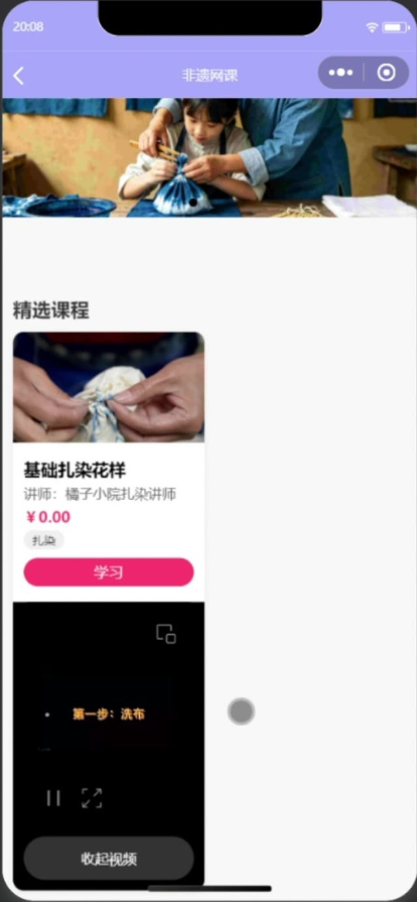
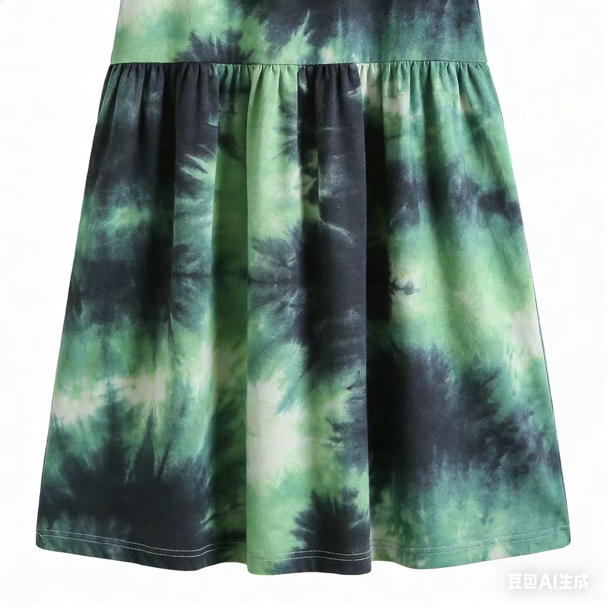
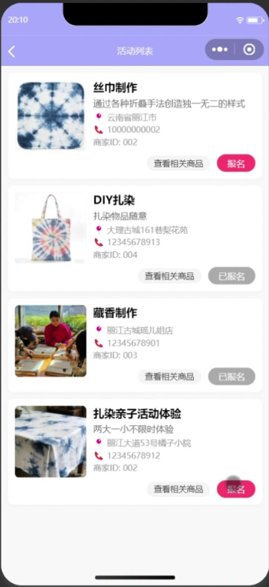
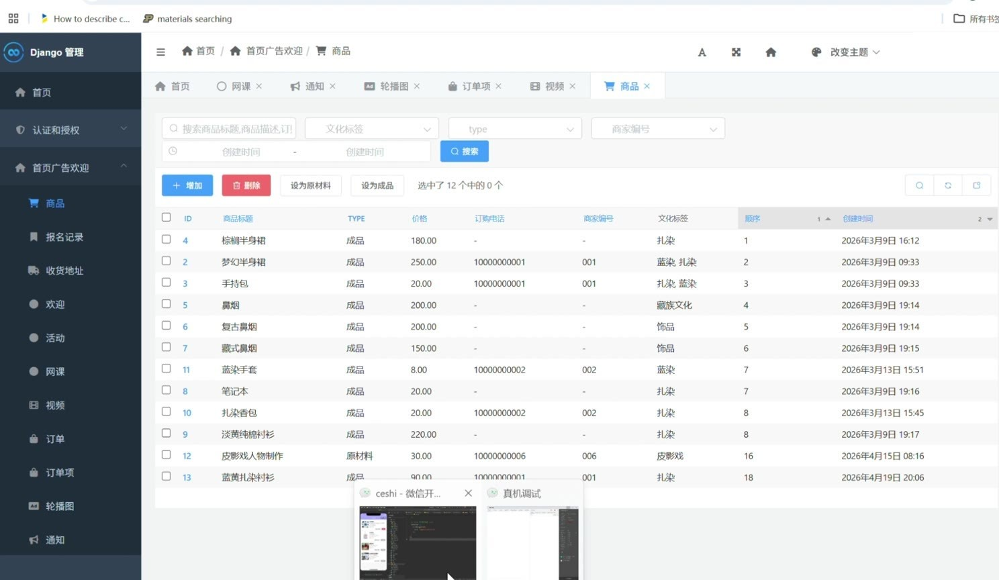

01 / DISCOVER
从一方风土开始
点击云南地图城市，查看当地非遗手艺与主题内容。
YUNNAN · INTANGIBLE CULTURAL HERITAGE
以云南地图为入口，串联技艺影像、线上课程、文创商品与线下活动。循着一门手艺，走近云南多彩的文化日常。
一张地图，一门手艺发现 · 学习 · 体验 · 分享
非遗文化
就在身边
01 A CULTURE, A JOURNEY
从地图、视频与网课，到商品和线下活动，跟随兴趣找到下一步。
01 / DISCOVER
点击云南地图城市，查看当地非遗手艺与主题内容。

02 / LEARN
查看讲师、课程价格与学习入口，循序了解技艺。

03 / SHOP
在非遗工坊浏览商品，查看价格与文化标签。

04 / TAKE PART
浏览活动信息，报名后可在个人中心查看记录。
02 CRAFTS & EVERYDAY LIFE
点击分类，右侧商品会即时筛选。商品图片、名称和售价来自小程序后台现有记录；无匹配商品的分类显示为空。
现有商品记录中没有匹配项目，不展示虚构商品。
03 A SIMPLE GUIDE
根据你感兴趣的内容选择入口；需要下单或报名时，依小程序页面提示继续操作。
浏览主题内容，点击云南地图城市，查看当地非遗手艺。
观看视频、查看网课，或浏览工坊商品与活动信息。
登录后提交订单或活动报名，并在个人中心查看相关记录。
04 CULTURE IN FOCUS
排行榜按非遗文化标签汇总平台互动热度。此处数值来自当前本地数据库快照，不是线上实时榜单，也没有按日期截断。
商品未取消订单的商品数量 × 2
视频视频浏览量
活动报名参与人数
04 DJANGO BACK OFFICE
后台使用 Django Admin（项目路由 /admin/），部署后由管理员账号登录，管理内容、订单与活动报名。

商品后台提供关键词搜索和类型、文化标签、商家编号、创建时间筛选；可维护商品图片、类型、价格、描述与“是否删除”状态（项目没有独立库存或上下架字段）。
05 ADMIN & EXTENSIBILITY
后台使用 Django Admin（项目路由 /admin/），部署后由管理员账号登录。商品分类与文化标签、视频标签、活动地点和内容都可按运营需要维护，不局限于云南非遗题材。
打开“商品”列表，新增或编辑商品：上传图片，填写标题、成品/原材料、价格、描述和联系方式；设置分类标签与文化标签、排序值及商家编号，保存后检查小程序分类展示。关闭展示时用“是否删除”状态，项目没有单独的库存字段。
在“网课”填写封面、标题、简介、价格、讲师、标签并上传课程视频；在“视频”维护标题、封面、视频文件和标签。保存后到小程序课程/视频入口确认内容。
新增活动，填写标题、内容、图片、地点、联系电话、标签和商家编号。报名记录会关联活动；可在活动详情查看报名人数，也可进入“报名记录”核对姓名、联系方式、人数与备注。
在“订单”按状态筛选或搜索用户、收件人和电话；打开订单核对商品明细、数量、收件地址与备注，并按实际履约进度更新待处理、已确认、已发货、已完成或已取消状态。
在用户资料、收货地址、轮播图和通知等列表核对或更新内容。管理员按项目当前权限操作；交付时应另行确认备份、账号权限和数据维护责任。
说明依据项目的 Django 模型和管理配置整理。后台管理功能需在部署并配置管理员账号后使用；此项目未提供公开演示地址或账号。排行榜由有效商品、视频浏览量和活动报名人数自动汇总，后台没有手动编辑热度值的页面。
A LITTLE CLOSER TO YUNNAN
地图、课程、视频、好物与活动，循着你的兴趣，找到下一步。
回到页面顶部 ↑